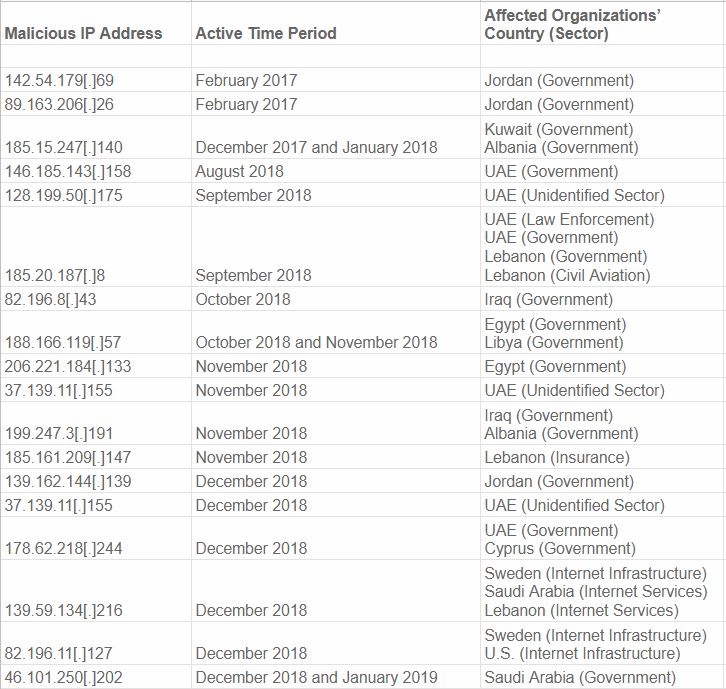
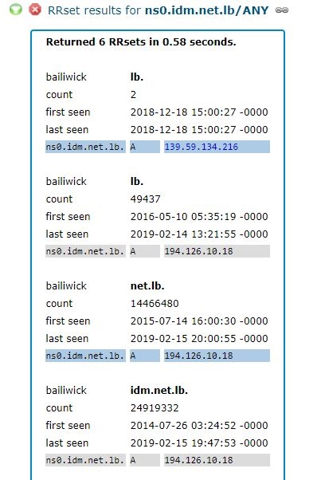
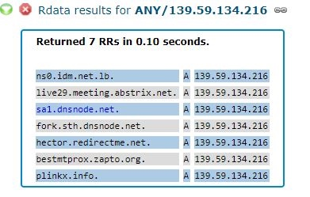
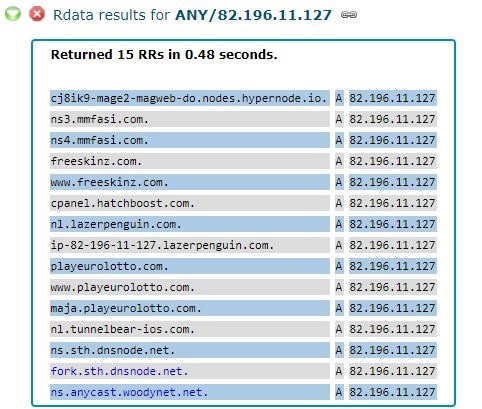
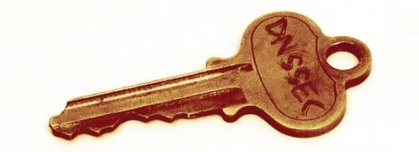

深入了解最近普遍存在的DNS劫持攻击事件
文章摘抄自A Deep Dive on the Recent Widespread DNS Hijacking Attacks，中文翻译由谷歌翻译提供。
美国政府 - 以及一些领先的安全公司 - 最近警告说，一系列高度复杂和广泛的攻击使得可疑的伊朗黑客窃取了来自多个政府和私营公司的大量电子邮件密码和其他敏感数据。但到目前为止，这次袭击究竟是如何发生袭击以及谁被击中的细节依然笼罩在保密之中。
这篇文章旨在记录这些攻击的程度，并将这一绝对成功的网络间谍活动的起源追溯到关键互联网基础设施提供商的一系列连锁违规行为。
在我们深入研究在这篇文章中达到高潮的广泛研究之前，回顾到目前为止公开披露的事实是有帮助的。在2018年11月27日，思科的Talos研究部门发表了一篇文章，概述了一项名为“ DNSpionage ” 的复杂网络间谍活动的轮廓。
该名称的DNS部分是指全球“ D omain N ame S ystem ”，它通过将人性化的网站名称（example.com）转换为更容易的数字Internet地址，作为互联网的一种电话簿。供计算机管理。
Talos表示，DNSpionage的肇事者能够通过劫持这些目标的DNS服务器来窃取黎巴嫩和阿拉伯联合酋长国的一些政府和私营部门实体的电子邮件和其他登录凭证，以便所有电子邮件和虚拟专用网络（VPN） ）流量被重定向到攻击者控制的Internet地址。
Talos报告称，这些DNS劫持还为攻击者获取目标域的SSL加密证书铺平了道路（例如webmail.finance.gov.lb），这使得他们能够解密截获的电子邮件和VPN凭证并以纯文本格式查看。
在2019年1月9日，安全厂商FireEye 发布了其报告 “全球DNS劫持活动：大规模DNS记录操作”，该报告对于间谍活动的“方式”进行了更为详尽的技术细节，但其中包含的其他细节很少。受害者。
与FireEye报告大致同时，美国国土安全部发布了一项罕见的紧急指令，命令所有美国联邦民用机构保护其互联网域名记录的登录凭证。作为该任务的一部分，DHS发布了DNSpionage活动中使用的域名和Internet地址的简短列表，尽管这些细节并未超出Cisco Talos或FireEye之前发布的内容。
这种情况在2019年1月25日发生了变化，当时安全公司CrowdStrike 发布了一篇博文，列出了迄今为止间谍活动所使用的几乎所有互联网地址。本篇文章的其余部分基于KrebsOnSecurity进行的开源研究和访谈，旨在更加了解这种非同寻常的持续攻击的真实程度。

与CrowdStrike发布的DNSpionage活动相关的“妥协指标”。
被动DNS
我开始研究CrowdStrike报告中列出的每个互联网地址，并通过Farsight Security和SecurityTrails运行它们，这些服务被动地收集有关与全球数千万个网站域相关的DNS记录变化的数据。
从每个互联网地址向后工作，我能够看到，在2018年的最后几个月，DNSpionage背后的黑客成功地破坏了50多个中东公司和政府机构的DNS基础设施的关键组件，包括塞浦路斯阿尔巴尼亚的目标，埃及，伊拉克，约旦，科威特，黎巴嫩，利比亚，沙特阿拉伯和阿拉伯联合酋长国。
例如，被动DNS数据显示攻击者能够劫持mail.gov.ae的DNS记录，mail.gov.ae处理阿拉伯联合酋长国政府办公室的电子邮件。以下是此网络间谍活动中成功入侵的其他一些有趣资产：
-nsa.gov.iq：伊拉克国家安全咨询
-webmail.mofa.gov.ae：阿拉伯联合酋长国外交部电子邮件
-shish.gov.al：阿尔巴尼亚国家情报局
-mail.mfa .gov.eg：埃及外交部邮件服务器
-mod.gov.eg：埃及国防部
--embassy.ly：利比亚大使馆
-owa.e-albania.al：电子邮件的Outlook Web Access门户网站阿尔巴尼亚政府门户网站
-mail.dgca.gov.kw：科威特民航局的电子邮件服务器
-gid.gov.jo：约旦的综合情报总局
-adpvpn.adpolice.gov.ae：阿布扎比警方的VPN服务
-mail.asp.gov.al:Albanian State Police的电子邮件
-owa.gov.cy：塞浦路斯政府的Microsoft Outlook Web Access
-webmail.finance.gov.lb：黎巴嫩财政部的电子邮件
-mail.petroleum.gov .eg：埃及石油部
-mail.cyta.com.cy:Cyta电信和互联网提供商，塞浦路斯
-mail.mea.com.lb：中东航空公司的电子邮件访问
Farsight和SecurityTrails提供的被动DNS数据也提供了关于何时每个域被劫持的线索。在大多数情况下，攻击者似乎已经更改了这些域的DNS记录（我们马上就会看到“如何”），以便这些域指向他们控制的欧洲服务器。
在这些TLD的DNS记录被劫持后不久 - 有时几周，有时只有几天或几小时 - 攻击者能够从SSL提供商Comodo和/或Let's Encrypt获取这些域的SSL证书。可以在cert.sh上看到针对其中几种攻击的准备工作，该数据库提供了所有新SSL证书创建的可搜索数据库。
让我们仔细看一个例子。CrowdStrike报告引用了互联网地址**139.59.134[.]216 **（见上文），根据Farsight多年来，它只是七个不同领域的所在地。其中两个域名仅在2018年12月出现在该互联网地址，包括黎巴嫩的域名，以及 - 奇怪的是 - 瑞典。
第一个域是“ ns0.idm.net.lb ”，它是黎巴嫩互联网服务提供商IDM的服务器。从2014年初到2018年12月，ns0.idm.net.lb指向194.126.10[.]18，其中足够的是一个基于黎巴嫩的互联网地址。但正如我们在下面的Farsight数据截图中看到的那样，2018年12月18日，该ISP的DNS记录被更改为将指向IDM的互联网流量指向德国的托管服务提供商（ 139.59.134[.]216 地址）。

资料来源：远见安全
根据Farsight的说法，请注意在IDM的域名中列出的其他内容为139.59.134 [。] 216：

域名sa1.dnsnode.net和fork.sth.dnsnode.net的DNS记录也从他们在瑞典的合法家园改为12月份由攻击者控制的德国托管服务提供商。这些域名由Netnod Internet Exchange拥有， Netnod Internet Exchange是一家位于瑞典的主要全球DNS提供商。Netnod还运营着13个“根”名称服务器之一， 这是构成全球DNS系统基础的关键资源。
我们马上回到Netnod。但首先让我们看看CrowdStrike报告中引用的另一个Internet地址，作为DNSpionage黑客滥用的基础设施的一部分：82.196.11[.]127。荷兰的这个地址也是域名mmfasi[.]com的所在地，Crowdstrike说这是一个攻击者的域名之一，被用作一些被劫持的基础设施的DNS服务器。

正如我们在上面的屏幕截图中看到的那样，82.196.11[.]127暂时是另一对Netnod DNS服务器以及服务器“ ns.anycast.woodynet.net ”的所在地。该域名来源于昵称 Bill Woodcock，担任Packet Clearing House（PCH）的执行董事 。
PCH是一家位于加利福尼亚州北部的非营利性实体，它还管理着世界上大量的DNS基础设施，特别是超过500个顶级域名的DNS和DNSpionage所针对的一些中东顶级域名。
以目标公司为目标 Netnod首席执行官 LarsMichaelJogbäck于2月14日与KrebsOnSecurity联系，确认Netnod的DNS基础设施部分在2018年12月底和2019年1月初被攻击者获取Netnod域名注册商账户后被劫持。
Jogbäck指出该公司于2月5日在其网站上发布的声明，该声明称Netnod在1月2日了解了它在攻击中的作用，并在整个过程中与所有相关方和客户保持联系。
“作为国际安全合作的参与者，Netnod在2019年1月2日意识到我们已经陷入了这波浪潮中，我们经历了MITM（中间人）攻击，”声明中写道。“Netnod不是袭击的最终目标。该目标被认为是在瑞典以外的国家捕获互联网服务的登录详细信息。“
在2月15日与该作者的访谈中，PCH的伍德科克承认，在DNSpionage黑客滥用未经授权的域名注册商访问后，其组织的部分基础设施遭到了破坏。
碰巧，pch.net和dnsnode.net的注册商记录指向相同的来源：Key-Systems GmbH，一家位于德国的域名注册商; 和Frobbit.se，瑞典的一家公司。Frobbit是Key Systems的经销商，两家公司共享一些相同的在线资源。
伍德科克表示，黑客已经破获了PCH的注册商用于发送称为可扩展供应协议（EPP的信令消息的凭据 。EPP是一个鲜为人知的界面，可作为全球DNS系统的一种后端，允许域名注册商通知区域注册机构（如Verisign）有关域记录的更改，包括新域名注册，修改和转移。
“1月初，Key-Systems表示，他们相信他们的EPP界面已被滥用有效证件的人滥用，”伍德科克说。
Key-Systems拒绝评论这个故事，除了说它没有讨论其经销商客户业务的细节。
Netnod 关于此次袭击的书面声明提到了该公司安全总监PatrikFältström的进一步询问，PatrikFältström也是Frobbit.se的共同所有人。
Fältström在给KrebsOnSecurity的电子邮件中表示，Frobbit和Key Systems的DNSpionage攻击者将未经授权的EPP指令发送到各个注册机构。
“从我的角度来看，这次攻击显然是严重的EPP攻击的早期版本，”他写道。“也就是说，目标是将正确的EPP命令发送到注册管理机构。对于未来的推断，我个人非常紧张。注册管理机构是否允许任何EPP命令来自注册商？我们总会有一些弱的注册商，对吧？“
DNSSEC
这些攻击的一个更有趣的方面是，Netnod和PCH都是DNSSEC（又称“DNS安全扩展”）的声音支持者和采用者，这是一种旨在打败DNSpionage黑客能够攻击的那种攻击的技术。执行。
 图片：APNIC
DNSSEC通过要求对给定域或域集的所有DNS查询进行数字签名来保护应用程序不使用伪造或操纵的DNS数据。在DNSSEC中，如果名称服务器确定给定域的地址记录在传输过程中未被修改，则它会解析域并让用户访问该站点。但是，如果该记录已以某种方式被修改或与所请求的域不匹配，则名称服务器会阻止用户访问欺诈性地址。
根据APNIC（亚太地区互联网地址注册机构）收集的测量数据，虽然DNSSEC可以成为减轻DNSpionage发起的攻击的有效工具，但只有约20％的全球主要网络和网站启用了它。区域。
Jogbäck表示，Netnod的基础设施遭受了来自DNSpionage攻击者的三次单独攻击。前两个发生在2018年12月14日到2019年1月2日之间的两周时间窗口中，以及未受 DNSSEC保护的目标公司服务器。
不过，他说，12月29日和1月2日的第三次攻击针对性的Netnod基础设施是由DNSSEC和服务自己的内部电子邮件网络保护。然而，由于攻击者已经可以访问其注册商的系统，因此他们能够暂时禁用该安全措施 - 或者至少足以获得Netnod的两个 电子邮件服务器的 SSL证书。
Jogbäck告诉KrebsOnSecurity，一旦攻击者拥有这些证书，他们就会为公司的目标服务器重新启用DNSSEC，同时显然准备启动攻击的第二阶段 - 将流经其邮件服务器的流量转移到攻击者控制的机器上。但Jogbäck表示，无论出于何种原因，攻击者在以后尝试吸收互联网流量之前，都忽略了使用未经授权的访问其注册商来禁用DNSSEC。
“对我们来说幸运的是，当他们发起他们的中间人攻击时，他们忘了删除它，”他说。“如果他们更熟练，他们就会删除域名上的DNSSEC，这是他们本可以做到的。”
伍德科克表示，PCH在其所有基础设施上验证了DNSSEC，但并非所有公司的客户 - 特别是DNSpionage所针对的中东国家 - 都已将其系统配置为全面实施该技术。
Woodcock表示，PCP的基础设施是针对DNSpionage攻击者在2018年12月13日和2019年1月2日之间的四次不同攻击中的目标。每次攻击，黑客都会打开他们的密码啜饮工具大约一个小时，然后在返回之前将其关闭每次运行后网络恢复到原始状态。
攻击者不需要每次启动他们的监控拖网超过一个小时，因为大多数现代智能手机被配置为持续为用户可能在他的设备上设置的任何帐户提取新电子邮件。因此，攻击者能够通过每次短暂的劫持来获取大量的电子邮件凭据。
在2019年1月2日 - 也就是DNSpionage黑客追踪Netnod内部电子邮件系统的同一天 - 他们还直接针对PCH，从Comodo获得了两个处理该公司内部电子邮件的PCH域的SSL 证书。
伍德科克表示，PCH对DNSSEC的依赖几乎完全阻止了这种攻击，但它设法为当时旅行的两名员工收集电子邮件凭据。这些员工的移动设备通过酒店无线网络下载公司电子邮件 - 作为使用无线服务的先决条件 - 迫使他们的设备使用酒店的DNS服务器，而不是PCH的DNNSEC系统。
伍奇科克说：“这两个人确实被弹出，他们都在旅行并且使用他们的iPhone，他们不得不在劫持期间穿越俘虏门户网站。” “他们不得不关闭我们的名称服务器以使用强制网络门户，在此期间，手机上的邮件客户端检查了新的电子邮件。除此之外，DNSSEC还使我们免于真正彻底拥有。“
由于PCH使用DNSSEC保护其域名，劫持其邮件基础设施的实际效果是，大约一个小时没有人，但两名远程员工收到任何电子邮件。
“对于我们基本上所有的用户来说，它看起来就像邮件服务器短时间内无法使用，”伍德科克说。“如果他们碰巧正在检查他们的手机或其他什么，它暂时没有解决，而且每个人都认为这很有趣，我会在一段时间后再检查一下。当他们再次检查时它工作正常。我们的一些工作人员注意到我们的电子邮件服务发生了短暂的中断，但没有人认为可以与其他任何人讨论或打开机票。“
但DNSpionage黑客并没有被吓倒。PCH在本月早些时候发给客户的一封信中表示，法医调查确定，1月24日，一台拥有其网站用户数据库的计算机遭到入侵。存储在数据库中的用户数据包括客户的用户名，bcrypt密码哈希值，电子邮件，地址和公司名称。
“我们没有看到任何证据表明攻击者访问了用户数据库或泄露了它，”该消息显示。“因此，我们在透明度和预防措施方面为您提供这些信息，而不是因为我们认为您的数据受到了损害。”
改进
针对这个故事接受采访的多位专家表示，基于DNS的攻击存在的一个长期问题是，许多组织倾向于将其大部分DNS基础架构视为理所当然。例如，许多实体甚至不记录其DNS流量，也不密切关注对其域记录所做的任何更改。
即使对于那些努力监控其DNS基础架构以进行可疑更改的公司，一些监控服务也只是被动地拍摄DNS记录的快照，或者只是每天一次地主动执行。事实上，伍德科克表示，PCH依赖于不少于三个监控系统，并且他们都没有提醒他的组织注意到PCH的DNS系统遭遇的各种一小时劫持事件。
“我们有三种不同的商业DNS监控服务，其中没有一项能够实现，”他说。“他们甚至都没有警告我们事情发生后就已经发生了。”
伍德科克表示，PCH已经建立了一个系统，每小时多次轮询自己的DNS基础设施，并在任何变化时立即发出警报。
Jogbäck表示，Netnod还加强了监控，并加倍努力确保使用所有可用于保护其域基础架构的选项。例如，该公司之前没有使用“ 域锁定 ” 保护其所有域名，“ 域名锁定 ”是一种服务，要求注册商在对域记录进行任何修改之前采取其他身份验证步骤。
“我们真的很伤心，我们没有更好地保护我们的客户，但我们也是攻击链中的受害者，”Jogbäck说。“你被抢劫后可以换成更好的锁，并希望让某人再次做到更难。但我可以真实地说，我们已经从这次袭击中成为受害者中学到了很多，而且我们现在比以前好多了。“
伍德科克表示，他担心互联网决策者和其他基础设施提供商不会严重或迫切地对全球DNS构成威胁，他相信DNSpionage黑客将在未来数月和数年内有大量其他受害者攻击和利用。
“伊朗人不只是试图做出这些攻击立即生效。他们试图深入到互联网基础设施中，这样他们就可以随时随地使用这些东西。
“所有这一切都是一场战斗，”他说。“伊朗人不只是试图做出这些攻击立即生效。他们试图深入到互联网基础设施中，这样他们就可以随时随地使用这些东西。他们希望获得尽可能多的方式，以便将来可以用于特定的目标。“
建议
John Crain是ICANN的首席安全，稳定和弹性官员，ICANN是负责监管全球域名行业的非营利实体。Crain表示，许多可以使攻击者更难以劫持目标域或DNS基础架构的最佳实践已经有十多年了。
“这很大程度上取决于数据卫生，”Crain说。“大型组织直到妈妈和流行实体都没有关注一些非常基本的安全实践，比如多因素身份验证。如今，如果你有一个次优的安全立场，你就会被拥有。这就是今天的现实。我们现在看到更复杂的对手现在在互联网上采取行动，如果你没有做基本的事情，他们会打击你。“
组织的一些最佳实践包括：
使用DNSSEC（签名区域和验证响应）
使用注册表锁等注册功能，可以帮助保护域名记录不被更改
使用应用程序，Internet流量和监控的访问控制列表
使用双因素身份验证，并要求所有相关用户和分包商使用它
如果使用密码，请选择唯一密码并考虑密码管理器
审核注册商和其他提供商的帐户
通过监控来监控证书，例如，证书透明度日志
标签：APNIC，比尔·伍德科克，思科塔洛斯，科摩多，CrowdStrike，国土安全部，DNSpionage，DNSSEC，EPP，可扩展的供应协议，远见安全，FireEye的，Frobbit，ICANN，约翰·克雷恩，键控系统，拉尔斯·迈克尔Jogbäck，LetsEncrypt，Netnod，包清算所，PatrikFältström，PCH，SecurityTrails，美国国土安全部
此条目发布于2019年2月18日星期一上午8:51，并在A Little Sunshine，Data Breaches，The Coming Storm下提交。您可以通过RSS 2.0 Feed 关注此条目的任何评论。您可以跳到最后并发表评论。目前不允许Pinging。
26条评论（懒得处理格式了）
Beau Kinstler 2019年2月18日上午9:50 一如既往的棒极了。谢谢Brian。出于好奇，你如何将DNSSEC和你在这里发布的攻击与GRC.com和Steve Gibson的“DNS欺骗”测试工具中描述的DNS缓存中毒联系起来？ https://www.grc.com/dns/dns.htm
答复 BrianKrebs 2019年2月18日晚上10:21 DNS缓存中毒最常发生在更本地级别，即用户的机器或路由器。本故事中描述的攻击涉及将DNS设置妥协到更高级别，远远超出最终用户的控制范围。
答复 汤姆威尔士 2019年2月18日上午9:58 “伊朗人不只是试图做出这些攻击立即生效”。
我查看了这篇文章，但我找不到任何证据表明“伊朗人”是肇事者。
有没有，或者这只是更具政治色彩的暗杀？
答复 BrianKrebs 2019年2月18日上午10:31 查看故事中链接的CrowdStrike博客文章。我没有打印很多我的信息，主要是因为故事已经很长了，无论如何这可能不是我将在这个主题上写的最后一个。但是，我也试图不提供太多细节，以帮助攻击者在未来改进攻击。也就是说，从我对这个故事中未提及的许多人的访谈中可以清楚地看出，有一些线索指向某些特定威胁行为者的相当大的努力。
答复 TreFunny 2019年2月18日上午11点50分 关注CrowdStrike，他们只是联邦调查局的私人部门......看看与FBI的所有联系，这是可怕的。
看看他们是如何处理DNC黑客的，并没有停止它19天或疯狂的事情，但只花了2个小时来识别“熊”......吓人。
CrowdStrike将会在这些日子里曝光......
答复 戴夫亚当斯 2019年2月18日上午10:42 优秀的研究Brian。我希望使用DNSSec的20％都在美国。作为网络安全分析师，任何异常都是有原因的。如果您的邮件交换中断一小时，请进行调查。我们都需要做的不仅仅是保护我们的系统。我们还需要验证数据的来源。
答复 阳光之州 2019年2月18日上午11:41 我知道我的域名，我使用2FA访问网站界面，以及DNSSEC和注册表锁定已启用
答复 Greg Askew 2019年2月18日上午11:54 “然而，他说，12月29日至1月2日的第三次攻击是针对受DNSSEC保护并服务于其内部电子邮件网络的Netnod基础设施。然而，由于攻击者已经可以访问其注册商的系统，他们能够暂时禁用该安全措施“。
这没有意义。不应该通过关闭服务器区域上的DNSSEC来禁用DNSSEC。要使DNSSEC提供任何值，它需要配置DNS服务器和客户端计算机上的实施。在Windows上，使用名称解析策略表（NRPT）执行客户端强制执行。如果未在客户端上强制执行DNSSEC，则它实际上不提供任何值。如果在客户端上强制执行DNSSEC，则禁用DNS服务器上的区域的DNSSEC将导致客户端上的名称解析失败。如果任何受害组织拥有支持DNSSEC的域，但未在其客户端计算机上强制执行DNSSEC，则他们会自行开枪。
答复 JJ 2019年2月18日下午2:53 杀死DNSSEC只需要摆脱DS记录。我不得不走很多公司，为什么他们全新的DNSSEC配置并没有真正起作用，而且几乎总是因为他们没有相应的DS记录。人们不再做功课了：“但我们签了这个区！”
答复 丹尼斯塞甘 2019年2月18日下午12:17 “为什么CISA发布了我们的第一份紧急指令” ，主任Christopher Krebs
任何关系？
答复 BrianKrebs 2019年2月18日下午12:18 不
答复 表姐艾迪 2019年2月18日下午12:28 伊朗和俄罗斯似乎正在为网络战争做准备。 希望我们的政府（Home Land Security，FBI，CIA）能够保护我们的国家。我真的希望并祈祷特朗普总统会让Brian Krebs成为我们政府网络恐怖部门的负责人！
答复 橡子 2019年2月18日下午12:55 185.20.187 [。] 8封锁，未知原因，由Forcepoint，Fortinet，卡巴斯基（等） 提供，分析，卡巴斯基（等）2019-02-15 http://www.virustotal.com/en/url/0054576de4b5c983f49d77046800ed029b9d3aebdc6334261386c9aac4be39a5/analysis
答复 橡子 2019年2月18日下午1:24 Talos：“攻击者将主机名重定向到IP 185.20.187 [。] 8短时间。”11月6日，9月13日等
C2（命令和控制）服务器，以及另外两个IP（全部在同一荷兰网络上）。
答复 ChrisSuperPogi 2019年2月18日下午2:03 令我惊讶的是，我们可能无法实践多年前推荐的数据卫生！我的意思是，DNSSEC已经很老了。注册表锁定也已有一段时间了。 多因素身份验证是一个非常新的趋势，但它是网络杀戮链的关键部分。
希望我们从中吸取教训。
答复 JJ 2019年2月18日下午2:55 注册表锁实际上并不是众所周知的，人们将它与传输锁混淆。再加上它需要花钱而且你有答案。
答复 YYZ 2019年2月18日下午3:12 IP地址的最后一个八位字节点周围的括号[]是什么意思？
答复 大卫C. 2019年2月18日下午4:29 它们旨在防止Web爬虫爬进那些（犯罪）服务器。并且防止移动网络浏览器将它们变成链接，最终可能会欺骗无辜的读者访问这些网站。
答复 ASB 2019年2月18日下午4:32 [。]旨在确保链接不会变为可点击。因此它是本网站读者的保护机制（除其他外）
答复 Nobby Nobbs 2019年2月18日下午5:24 可能是为了防止IP地址在大多数浏览器中显示为链接。在讨论像Brian这样的恶意网站时可能会出现问题。
感谢另一篇伟大的文章，布莱恩！
答复 BrianKrebs 2019年2月18日晚上10:18 谢谢。是的，正如其他人所说，括号有效地阻止了任何网站，浏览器或电子邮件客户端将这些地址变成可点击的链接。
答复 大卫C. 2019年2月18日下午4:28 我将添加到实践列表中以获取包含身份证明的证书，而不仅仅是域。
面对DNS劫持，证明“这是example.com”的证书毫无意义。
一个说“示例公司，1234假街，圣克拉拉，加利福尼亚州”并且来自需要身份证明文件的权威机构将更加安全。特别是如果用户习惯于在位置栏中看到全名，并且在某些时候突然变为“example.com”。
答复 伊恩 2019年2月18日晚上8:39 没有最终用户如何保护自己的指标。在看了DNS问题很长一段时间后，我刚刚做了一次重拍。曾经有一次我没有使用我的DNS旋转器脚本 - 我有一个脚本可以随机选择随机dns服务器。野蛮但似乎可以防止明显的dns渎职行为。有点厌倦了所有这一切，互联网是故意保持borken恕我直言。伊朗应该实施制裁，例如将所有伊朗学生/教授从大学中移除，直到他们学会成为好公民。与中国人一样... LOL看看任何“敏感”的工作场所以及振动器和推动者的名字，所有人都经过了完美的审查......国家赞助的所有最敏感的地方的傀儡和间谍，而同等或更好能力的国内学生必须如果他们能找到一个地方，就要与债务和贷款斗争！最高阶的愚蠢！
答复 BrianKrebs 2019年2月18日晚上9:35 对最终用户来说有点复杂。您可以将DNS设置设置为Google的DNS - 8.8.8.8和4.4.2.2 - 当域名签名时，应该强制执行DNNSEC。但是，如果您不在自己的网络上，并且您的移动数据提供商的DNS设置启动，事情会变得更加棘手。我不确定最终用户是否有办法控制在这种情况下使用的DNS设置。
答复 Rich Altmaier 2019年2月18日晚上11:09 保护DNS当然很重要而且很好。然而，就用户保护自己而言，这基本上是一个问题：我是否连接到我建立帐户的服务器？ 我们可以使用Yubikey或等效服务器来验证用户身份。但我们需要一个反向Yubikey，我的密钥也确认服务器是我建立我的帐户的那个。
我相信Yubikey的技术适用于此。但用户体验是擅离!! 我想插入我的密钥并要求密钥+浏览器确认：基于加密交换，我正在与之通信的服务器确实拥有我之前在那里建立的加密密钥。
请！！！
答复 Dnspionage 2019年2月18日晚上11:29 更多的组织应该部署DNSSEC，但大多数组织不了解它的工作原理以及它的价值。
Snipaste 无法在 Mac 上截图的解决办法
MacOSX 版本：Mojave 10.14.2 Snipaste 版本：1.16.2
以下列出遇到部分问题： 1、使用截图功能，手动画矩形框，但是选定框画完后松开触摸板，选定框自动消失，导致无法截图。（手动选定截图区域占截图使用时间99%） 2、使用截图功能，程序自动识别截图区域，双击可以得到截图并且有箭头等选项，画一个箭头后，选定框自动消失，截图会带着箭头自动保存到图片目录。（这导致没法多画几个箭头，也没法另存为图片）
解决办法
我后来在 https://github.com/Snipaste/feedback/issues/1012 这里找到了答案。 关闭欧路词典的划词翻译功能，即可正常使用截图。
汉化firefox火狐浏览器
1、点击 help——about 查看火狐版本
2、在火狐浏览器输入:http://ftp.mozilla.org,按照我下面给的网址依次选择目录，语言包在xpi目录下，简体中文（zh-CN.xpi）/繁体（zh-TW.xpi）。
为了方便也可以直接拷贝下列链接到浏览器地址栏，安装。
32位系统目录：http://ftp.mozilla.org/pub/firefox/releases/50.1.0/linux-i686/xpi/zh-CN.xpi
64位系统目录：http://ftp.mozilla.org/pub/firefox/releases/50.1.0/linux-x86_64/xpi/zh-CN.xpi
记得把版本号修改成浏览器当前版本号。
另一种方法是打开扩展商店，输入chinese，然后添加即可。或者直接访问该页面安装插件： https://addons.mozilla.org/en-US/firefox/addon/chinese-simplified-zh-cn-la/?src=api

Copyright © 2015 Powered by MWeb, Theme used GitHub CSS.